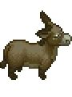

Donkey
| Donkey | |
|---|---|
 | |
Basic Information
| |
Location :
|
Village, Morgue |
Role :
|
Courier |
Day :
|
|

The Donkey is a talking work animal that drops off a corpse in front of the Morgue every some days. He has a cart that carries the corpse which is attached to him. When the Donkey arrives in front of the Morgue, a bell rings no matter where your character is in the game. He spawns somewhere east of the Village, and you can catch him traveling west towards the front of the Morgue.
After you gain access to the Church, the Donkey will show up to initiate his quest. During the conversation he will drop a "present" in the form of his poop. Do not clean it! If you step on top of it, your character will slide and move at a slightly faster pace, being very useful to travel. As long as you don't enter a building, interact with an NPC, or interact with the environment your character will continue sliding.
Quests
Carrots and Oil
After you re-open the Church, the Donkey sees that you are not his comrade and instead have become a capitalist. He goes on strike and demands that you bring him 10×
carrot and
seed oil to grease the cart's wheels before he will complete the delivery of his current corpse. He notifies you that he will only bring future corpses for the price of 5×
carrot, paid in advance. You can pay these carrots by storing 10 at a time in a box nearby the Morgue. He also tells you that he wants a day off and will no longer bring corpses on  .
.
Revolution (Game of Crone DLC)
Become an ally of Comrade Donkey and take part in the Revolution!
The first day after Donkey's strike, he will come inform you of the revolutionary plans of the ECoPoDP (The Executive Committee of the Party of the Donkeys' Proletariat). He wants you to build a contraband box, create a Cookbook (crafted at the Desk), and provide 5×
red apple. The contraband box can be assembled right next to the Donkey's usual drop-off spot, no parts needed.
The reward for providing these items is 1×
jewelry and 1×
Bank checks and the Revolutionary message 1
The Revolutionary message 1 the Donkey gives you, asks for 5×
faith and Aphorisms about the evils of money (crafted at the Desk).
Go to bed when that's done and you'll find the in the Contraband Box the Revolutionary message 2 and 2×
Pile of components, which you will need to craft the Donkey Combat Equipment which is a 1×
Battle horseshoes
and 1×
Iron unicorn horns.
You'll also have to bring a 1×
Pumpkin to Clotho and have her enchant it. She'll do it for the modest sum of  50 . For the Donkey Combat Equipment, you will need to take the 2×
50 . For the Donkey Combat Equipment, you will need to take the 2×
Pile of components to Krezvold and give him  50 . Wait for the next day, collect the 1×
50 . Wait for the next day, collect the 1×
Battle horseshoes and 1×
Iron unicorn horns and send it through the Contraband Box.
The day after you will find in the box only the Revolutionary message 3 with a request to deliver 2×
Black paint, 2×
White paint, 5×
Jelly of incredible power and a
Revolutionary donkey banner
Once all these items will be delivered the Donkey will inform you that the Revolution is over and reward you with an Ice axe
Notes
- In patch 1.400, Donkey gives Piece of donkey hair after receiving Revolutionary message 2.
- As of patch 1.027, Donkey no longer visits when the carrot crate is empty after Donkey's quest is completed. Previously, Donkey would show up but kept the corpse until carrots were added to the crate.
- Donkey will not deliver a corpse if the game is loaded after noon has passed. This is likely a bug.
- Before constructing the carrot crate, Donkey delivers a corpse every 2 days - however, not following a very specific order of actions will lead to Donkey's absence for 1+ days, causing a potential shift if not an extended delay of his deliveries, thus postponing the poop and crate events. In order to avoid those, during Merchant's day you must interact with at least 1 NPC, but not close to noon (+-1 minute), as well as "load in" the area where Donkey spawns from (behind the building in front of which Merchant stands). For Inquisitor, however, the strategy is different. You must NOT visit the village during the first half of that day and talk to the Inquisitor before Donkey spawns. During Astrologer's day it is possible to "force" the Donkey to bring you another corpse, but any presence near the village, conversations with NPCs or attempts to teleport to the Lighthouse before noon will stop the Donkey from coming. The Donkey spawn conditions for 2nd Bishop's day are identical with Astrologer's and Inquisitor's days except for the requirement to open the church before noon and is locked as the poop event if conditions for flawless spawn throughout the previous days were met. Without any interference, the Donkey comes with the crate event on the Inquisitor's day, but if you are to complete Merchant's vegetable quest at any point before noon, then the Donkey arrives at noon of the same day. A truly mind boggling spaghetti codified mess of a sequence. Testing done by UmeChrono.
- After the crate is built and kept stocked with carrots, Donkey will deliver a corpse each day excluding
 .
.
| |||||||||||||||||||||||||||||